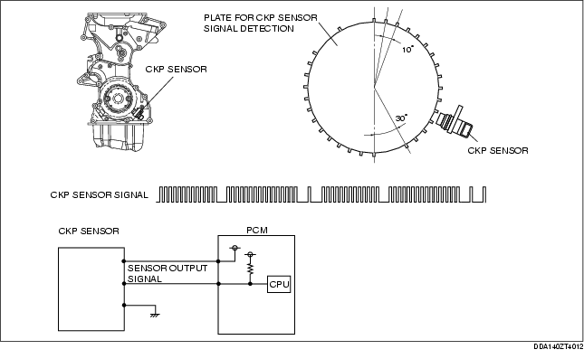

CRANKSHAFT POSITION (CKP) SENSOR CONSTRUCTION/OPERATION [ZY]
id0140001048c0
• The CKP sensor is installed on the engine front cover.
• The CKP sensor pulse wheel is divided into 30 projections and 3 empty spaces, and the distance between each projection equals 10° of crank angle.

• The CKP sensor is composed of an integrated circuit with a built-in GMR (Giant Magneto Resistance) element and signal processing circuit, and a magnet. With the adoption of the GMR element, the signal amplitude measured against the Hall element is larger, improving signal reliability.
• Signal detection utilizes the GMR characteristic in which electrical resistance changes according to magnetic flux.
• The shape (GMR output) of the magnetic flux detected by the GMR element is changed into a rectangular wave by the signal processing circuit and input to the PCM as a sensor output signal.